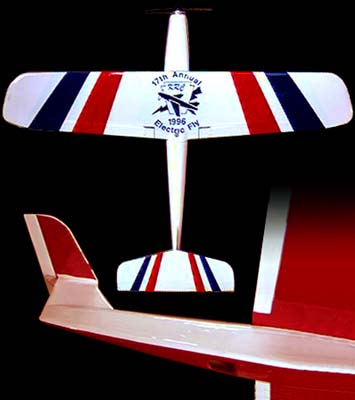

|  |
After a first visit to the KRC Electric Fly-In, I was convinced that electric models
could exhibit sparkling performance. To demonstrate that belief to other nonbelievers,
I built this Speed 400 pylon racer designed and kitted by Bill Griggs.
Despite a motor costing about $10, this small model really gets up goes. In the lower half of the picture you can easily see the T-tail configuration and the cooling air exit hole. This also double as a finger rest during a launch.
Copyright 1999, Thayer Syme
|